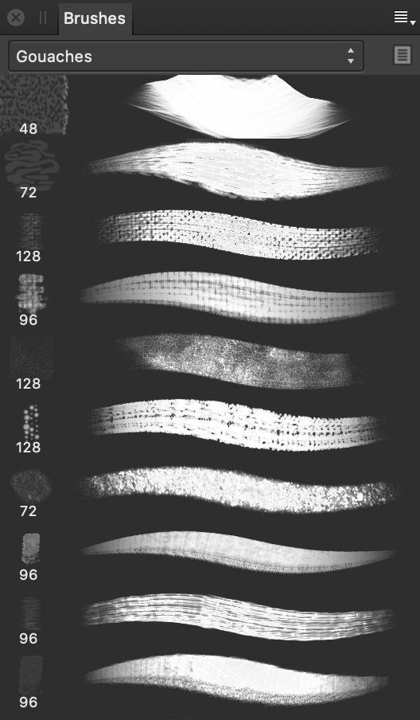

About the Brushes panel
A choice of pre-designed brushes are available as selectable thumbnails. With the brush tool selected, the selected thumbnail sets the type of brush to be used. Brushes are arranged in categories.

The panel displays the following:
- Category pop-up menu. To display brush thumbnails for the chosen category.
- Edit Brush—loads the selected brush in the Editing dialog, allowing it to be customized and saved as a new brush preset.
- Brush thumbnails for the current category.
The following options are available from the  Panel Preferences menu:
Panel Preferences menu:
- Create New Category—adds a new, empty category to the pop-up menu.
- Rename Category—allows you to rename the currently selected brush category.
- Delete Category—removes the currently selected brush category.
- Sort Categories By—allows you to sort brush categories by Name or Date Added.
- Import Brushes—allows you to import a set of vector or pixel brushes, including those in ABR format. Imported vector brushes will be available in a new Brushes panel category in Designer Persona; imported pixel brushes will be available via Pixel Persona in the equivalent location.
- Export Brushes—allows you to export the currently selected brush category, ready for sharing with other users.
For vector brushes:
- New Solid Brush—creates a basic, solid vector stroke.
- New Textured Intensity Brush—creates a brush stroke based on the opacity values of a raster image. In the pop-up dialog, navigate to and select a file, and click Open.
- New Textured Image Brush—creates a brush stroke based on the color values of a raster image. In the pop-up dialog, navigate to and select a file, and click Open.
For more information on creating custom brushes, see Creating custom brushes.
For pixel brushes:
- New Intensity Brush—creates a brush stroke based on the opacity values of a raster image. In the pop-up dialog, navigate to and select a file, and click Open.
- New Round Brush—creates a brush stroke with a circular edge.
- New Square Brush—creates a brush stroke with a square edge.
- New Image Brush—creates a brush stroke based on an image. In the pop-up dialog, navigate to and select a file, and click Open.
- New Brush From Selection—creates a custom image brush from any pixel selection or an intensity brush from a mask.
For more information on creating custom brushes, see Creating custom pixel brushes.